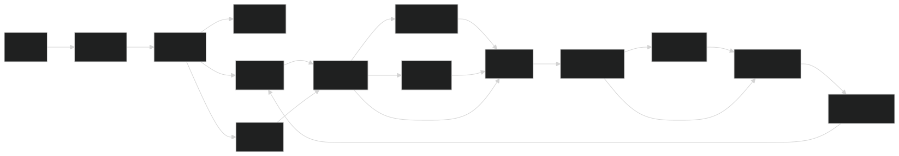

About Me
Senior Computer Engineering major at the Rose-Hulman Institute of Technology, originally from Madison, Wisconsin. Currently a Software Engineering Intern at V2X in Indianapolis, IN.
Contact Me
Email: tanseyjr@rose-hulman.edu
Phone: (608) 695-4271
Skills
- Git, CVS
- Jira, Monday
- Linux (RHEL, Ubuntu)
- TempleOS
- Racket
- Scheme
- C++
- C
- C#
- VHDL
- Verilog
- Assembly (RISC-V, ARM Thumb II)
- Bash
- Java
- Python
- SQL
- MATLAB
- HolyC
- CUDA
- Ghidra
- Operating System Development
- Real-Time Operating Systems (RTOS)
- QEMU
- GDB Debugger
- JSON
- Markdown
- Eclipse, ModelSim, VS Code, Vim
- Simulink
- Embedded Systems
- Project Management (SDLC)
- Signal Processing
- PCB Design
- Circuit Simulation
- Semiconductor Simulation Software
- Computer Architecture
Project Experience
Resilient Datalink Architecture for UAS
May 2026 – Present
• Developing novel RF-alternative communication hardware for UAS resilient command and control in contested, jamming-prone environments as part of Fafnir Aerospace's WYRM-1 platform • Focused on signal processing and electronics hardware design for reliable link performance under adversarial conditions • Co-founded and building alongside Ethan Schurr, Chase Masterson, and Brett Hixon
Mesh Network Protocol for Autonomous Drone Swarms
March 2026 – May 2026
• Co-developed a mesh network protocol enabling beyond-line-of-sight (BLOS) communication between operators, using a network of autonomous drones as intermediate routers • Employed a Raft-derivative consensus algorithm across drone nodes to maintain shared, reliable state and situational knowledge throughout the mesh • Designed to position operators at the edges of the network, communicating via short-range, more secure line-of-sight (LOS) links to nearby drones, which relay data hop-by-hop across the mesh to reach the operator on the opposite end • Implemented object-of-interest detection reporting, allowing drones to identify targets and propagate that information back to operators at the network edge • Co-authored with Brett Hixon and Ethan Schurr
RISC-V Embedded Operating System Kernel
Sept 2025 – Present
Developing a bare-metal embedded OS for 32-bit RISC-V from scratch, running under QEMU with a VirtIO block device. Everything from bootloader to userspace shell is hand-written in C and assembly without external libraries. Implements full privilege separation (S-mode/U-mode), Sv32 two-level page tables, a round-robin scheduler, a VirtIO block driver, and a tar-based file system. Currently extending the kernel with interrupt controllers, preemptive multitasking, and a broader device driver framework.
Overview & Kernel
• Bootloader sets stack pointer via linker-defined __stack_top and jumps to kernel_main in a naked assembly boot stub
• BSS zero-initialized at startup via memset over [__bss, __bss_end) before any C runs
• SBI integration: console I/O via ecall into OpenSBI using legacy putchar/getchar extensions
• Trap handling via kernel_entry: full 31-register context save/restore using csrrw sp, sscratch, sp for stack switching
• Syscall dispatch: scause == 8 routes to handle_syscall, advancing sepc += 4 to skip the ecall on return
• PANIC macro captures __FILE__ and __LINE__ and halts — used as a hard assertion throughout the kernel
Process Scheduler
• Cooperative round-robin: yield() scans procs[] for the next PROC_RUNNABLE process with pid > 0
• Idle process (pid=0) created at boot as fallback; kernel panics if execution ever returns to it
• Context switch: naked assembly saves 13 callee-saved registers (ra, s0–s11), swaps sp via sw sp,(a0) / lw sp,(a1), restores next process's registers
• Per-process 8 KiB kernel stacks embedded in struct process; initial stack frame pre-loaded with user_entry as return address
• satp CSR written on every context switch with SATP_SV32 | (page_table / PAGE_SIZE), bracketed by sfence.vma TLB flushes
• sscratch updated to each process's kernel stack top so trap entry always finds the correct stack
• Process exit: SYS_EXIT marks state PROC_EXITED and calls yield(); slots reused via PROC_UNUSED check
Virtual Memory & Paging
• Sv32 two-level page table: 10-bit VPN[1] indexes root table, 10-bit VPN[0] indexes leaf PTE — matches RISC-V Sv32 spec exactly
• map_page() allocates a second-level table on demand if root PTE lacks PAGE_V, writes leaf as (paddr/PAGE_SIZE)<<10 | flags | PAGE_V
• Kernel identity-mapped into every process over [__kernel_base, __free_ram_end) with PAGE_R|W|X — allows trap handling without a page table switch
• VirtIO MMIO region (0x10001000) explicitly mapped PAGE_R|W in each process so device registers are accessible from kernel code in any address space
• User binary copied page-by-page from embedded shell.bin.o into physical pages, mapped at USER_BASE = 0x1000000 with PAGE_U|R|W|X
• Partial last page handled: copy size clamped to min(PAGE_SIZE, remaining) to avoid over-reading the image
• user_entry naked stub sets sepc = USER_BASE, sstatus.SPIE = 1, executes sret to drop into U-mode
Disk I/O & File System
• VirtIO 1.0 legacy MMIO block driver targeting virtio-blk-device on QEMU bus at 0x10001000
• Init sequence: reset → ACK → DRIVER → set page size → init virtqueue → DRIVER_OK; panics on magic/version/device-ID mismatch
• Virtqueue allocated as one physically contiguous page via alloc_pages, written to VIRTIO_REG_QUEUE_PFN as a page frame number; queue size fixed at 16
• virtq_kick() posts descriptor to available ring, increments index, issues __sync_synchronize() barrier, notifies device via VIRTIO_REG_QUEUE_NOTIFY
• virtq_is_busy() polls used ring index against last_used_index for completion without interrupts
• Disk capacity read as 64-bit sector count from VIRTIO_REG_DEVICE_CONFIG; bounds-checked before issuing any request
• Tar-based file system layered on top of the block driver for reading embedded files at boot
• MMIO accessors use volatile pointer casts; all structs marked __attribute__((packed))
Scheme Interpreter & Language Implementation
Oct 2025 – Nov 2025
• Engineered a complete Scheme interpreter from scratch in Racket implementing programming language theory fundamentals • Developed a recursive-descent parser transforming S-expressions into abstract syntax trees with a syntax expansion phase • Implemented lexical scoping with an environment model supporting closures, first-class functions, and proper tail recursion • Built comprehensive syntactic forms including lambda, let/let*/letrec, cond, set!, define, and, or, begin • Co-authored with Ethan Schurr
Radiation Hardened Semiconductor Simulations
Jun 2025 – Aug 2025
• Simulated radiation-hardened semiconductors using CUDA and PETSc (including Argonne National Lab's linear solver), using parallelization to reduce processing time • Modified and wrote software enabling fuller CUDA utilization, improved testing, and full simulation test cases, achieving a 97% speed improvement • Developed a new testing framework and performed GPU hardware analysis to recommend cost-effective hardware solutions • View JRC Integrated Systems Information↗
Battery Management Systems
Aug 2024 – Jun 2025
• Worked under the Battery Management System team for the Rose-Hulman Battery Workforce Challenge team • Worked with Simulink, coding controls and response for electric vehicle pre-charging and crash detection • Utilized serial communication with microcontrollers • More Info
Pipelined RISC-V Processor
Dec 2024 – Feb 2025
Pipeline Architecture:

5-stage pipelined RISC-V architecture with hazard detection
Key Features:
- 5-Stage Pipeline: IF, ID, EX, MEM, WB with full forwarding
- Hazard Handling: Advanced data forwarding and stall detection
- Extended ISA: Custom GCD instruction for hardware acceleration
- Memory-Mapped I/O: Integrated input/output system
- Branch Prediction: Early branch resolution in decode stage
Technical Implementation:
Pipeline Control
Implemented full forwarding unit with EX/MEM and MEM/WB stage forwardingHazard Detection
Designed stall logic for load-use hazards and control hazardsCustom ALU
Extended ALU with GCD and MUL operations beyond standard RISC-VVerification
Comprehensive testbenches with a custom vUnit testing frameworkAchievements:
- Implemented a RISC-V processor in Verilog, evolving from single-cycle to pipelined architecture
- Added branch/jump handling with decode-stage detection and pipeline flushing
- Designed and integrated stall detection and data forwarding units to resolve hazards
- Verified correctness with custom testbenches and benchmarked
gcd/relPrimeprograms - Created and integrated a custom
gcdinstruction, eliminating branching and loops by computing directly in hardware - Reduced relPrime runtime from 172 → 58 cycles (n=6), 51,151 → 124 cycles (n=5040), and 366,757 → 200 cycles (n=30030)
- Achieved a 99.95% cycle reduction on the most demanding benchmark, an estimated drop from ~3.98×1012 → 317 cycles for n=223,092,870
- Demonstrated speedups exceeding 1010× while improving readability, predictability, and hardware efficiency
Infrared-Seeking Missile Control System (Project Lead)
Jan 2025 – Feb 2025
• Directed development of a real-time infrared tracking missile prototype using the MSP432 microcontroller with autonomous target acquisition • Designed a servo-controlled guidance system with 4 independent fins achieving sub-50ms response time and 5% angle accuracy • Implemented state machine logic (Base→Armed→Fire) with audio/visual feedback and proximity-based detonation • Optimized IR signal processing with a rotating optical assembly (stepper motor + photodiode + concave mirror) • Achieved warhead trigger latency of 130μs and ignition response within 1ms through hardware-software co-design • Integrated a serial communication interface and backup button redundancy for robust control • View GitHub Repository↗
RISC-V 32-bit Assembler
Aug 2024 – Nov 2024
Core Features:
- Complete RISC-V Support: Full implementation of R, I, S, SB, U, and UJ instruction types
- Label Resolution: Automatic address calculation and branch/jump target resolution
- Pseudoinstruction Framework: Extensible system for custom instruction macros
- Multi-format Output: Binary, hexadecimal, and annotated assembly output modes
- Comprehensive Error Handling: Detailed exception system for debugging invalid assembly
Technical Implementation:
Multi-Pass Architecture
Four-pass design: comment removal, pseudoinstruction expansion, label parsing, and machine code generationInstruction Encoding
Precise bit-field manipulation for all RISC-V instruction formats with two's complement immediate handlingAddress Resolution
PC-relative addressing with automatic offset calculation for branches and jumpsRegister Mapping
Complete register alias support (x0-x31, ra, sp, t0-t6, s0-s11, a0-a7, etc.)Key Achievements:
- Developed a complete 32-bit RISC-V assembler supporting all major instruction types
- Implemented a sophisticated label resolution system with forward reference support
- Created an extensible pseudoinstruction framework allowing custom macro definitions
- Built comprehensive error handling with specific exception types (BadImmediate, BadRegister, BadLabel, etc.)
- Designed a multi-format output system with debugging annotations and address mapping
- Achieved full compatibility with standard RISC-V assembly syntax including base-offset addressing
- Implemented robust two's complement arithmetic for immediate value encoding
- Created a modular architecture enabling easy extension for additional instruction sets
Genetic Algorithm Research (Project Lead)
Aug 2024 – Nov 2024
• Led development of an evolutionary simulator implementing genetic algorithms • Designed and implemented a chromosome visualization/editor with mutation, crossover, and selection mechanisms • Developed multiple fitness functions (bit counting, target matching, consecutive 1s) and selection algorithms • Created a GUI-based evolution simulator with real-time population visualization and statistical analysis • Implemented truncation, roulette wheel, and ranked selection methods with comparative performance analysis • Conducted experiments demonstrating genetic algorithm behavior across different parameter configurations • Successfully reproduced results from a well-known scientific paper on how learning can guide evolution (Hinton & Nowlan, 1987) • Utilized object-oriented design principles with inheritance for selection methods and interfaces for fitness functions
Communication & Network Projects
Sep 2025 – Oct 2025
Implementation of two network communication systems: a TCP-based chat application and a custom UDP-based protocol stack with packet encapsulation. Co-authored with Elliot Rodgers.
TCP Socket Chat Application
Client-Server Architecture
Implemented bidirectional real-time messaging with a multithreaded designUser Authentication
Dynamic username exchange and connection establishment protocolConcurrent Processing
POSIX threads for simultaneous send/receive operationsConnection Management
Graceful connection termination with 'quit' command handlingCustom Protocol Stack (RHP/RHMP)
Rose-Hulman Protocol (RHP)
Transport layer protocol with version control, port addressing, and checksum verificationRose-Hulman Message Protocol (RHMP)
Application layer protocol with message and ID request/response capabilitiesPacket Encapsulation
Proper layering with RHMP encapsulated within RHP packetsChecksum Validation
Internet checksum implementation with retry mechanismsKey Achievements
- Successfully implemented a complete client-server chat application with real-time bidirectional communication
- Designed and implemented custom network protocols (RHP/RHMP) from specification
- Implemented robust error handling with checksum verification and automatic retransmission
- Achieved proper packet encapsulation with a layered protocol architecture
- Developed a comprehensive testing framework with server response validation
- Demonstrated understanding of TCP vs UDP tradeoffs in different application scenarios
Work Experience
Software Engineering Intern
V2X, Indianapolis, IN
May 2026 – Present
• Software engineering internship
Co-Founder
Fafnir Aerospace, Indianapolis, IN
Apr 2026 – Present
• Co-founded a defense & aerospace startup developing proprietary wireless communication technologies for contested, jamming-prone environments • Lead integration and electronics hardware design as CTO
Software Engineering Intern
JRC Integrated Systems, Crane, IN
May 2025 – Aug 2025
• Developed radiation-hardened semiconductor simulation systems utilizing Argonne National Lab's linear solver PETSc • Modified and wrote software to enable CUDA utilization and parallelization, improved testing, wrote full simulation test cases, and furthered optimization, achieving a 97% speed improvement
Software Engineering Intern
YolBe, Chicago, IL
May 2024 – Aug 2024
• Authored SQL queries to analyze user activity patterns and platform engagement across 2,000+ users, identifying key engagement metrics that informed project decisions • Uncovered a 47% drop in user activity in the onboarding process, which prompted a user experience redesign • Developed a data visualization dashboard tracking 20 real-time metrics on user behavior using Redash and Mixpanel • Engineered prompts for company AI
More Info
Education: Bachelor of Science, Computer Engineering, Rose-Hulman Institute of Technology (Expected May 2027)
GPA 3.5/4.0 · Minor in Software Engineering
7x Dean's List
Relevant Courses: Operating Systems, Computer Architecture II, Programming Language Concepts, Embedded Systems, Advanced Microcomputers, Linear Control Systems, AC Circuits, Digital Systems, Signal Processing, Continuous-Time Signals and Systems, Object-Oriented Software Development, Data Structures & Algorithms, Intro to Semiconductor Physics, Electronic Device Modeling, High Speed Digital Design
Certifications: Project Management Essentials Certified, Lean Six Sigma White Belt Certified — Management & Strategy Institute (Dec 2025)
Campus Experience
Rose Rocketry — IREC Program Manager
May 2026 – Present
• Program Manager for Rose-Hulman's entry to the International Rocket Engineering Competition (IREC) • Coordinate cross-functional subteams, documentation, and pre-launch testing procedures • Own overall project timeline and system integration across avionics, payload, and structures
Rose Rocketry — USLI Payload Team Member
Mar 2025 – May 2026
• Member of Rose-Hulman's NASA Student Launch Initiative (USLI) team designing and building high-power rockets • Contributed to avionics and flight computer systems development • Designed and implemented real-time control systems for the payload with integrated sensors, microcontrollers, a debugging user interface, and a custom PCB • Participated in system integration and pre-launch testing procedures meeting NASA mission requirements • Prepared documentation and reports for NASA design reviews • Awarded Outstanding Payload Member by Rose-Hulman Rocketry (May 2026) as the team successfully launched and recovered its full-scale vehicle at USLI finals in Huntsville, AL
Rose Competitive Programming Team
Sept 2024 – Present
• Member of Rose-Hulman's competitive programming team competing • Regularly practice algorithm problems and participate in team coding competitions • Focus on developing efficient solutions to complex computational problems under time constraints • Collaborate with teammates to solve problems using data structures and advanced algorithms
Battery Workforce Challenge
Aug 2024 – Jun 2025
• Worked under the Battery Management System team for the Rose-Hulman Battery Workforce Challenge team • Developed controls and response systems for electric vehicle pre-charging and crash detection using Simulink • Implemented serial communication protocols with microcontrollers for battery monitoring • Collaborated with mechanical and electrical engineering students on integrated system design • More Info
ESCALATE Student Entrepreneur Program
Aug 2023 – Present
• Participate in an entrepreneurship program focused on technology commercialization • Develop business plans and pitch ideas for innovative tech solutions • Collaborate with students from diverse disciplines to create viable product concepts • Attend workshops on intellectual property, market analysis, and venture funding • Network with industry professionals and successful entrepreneurs